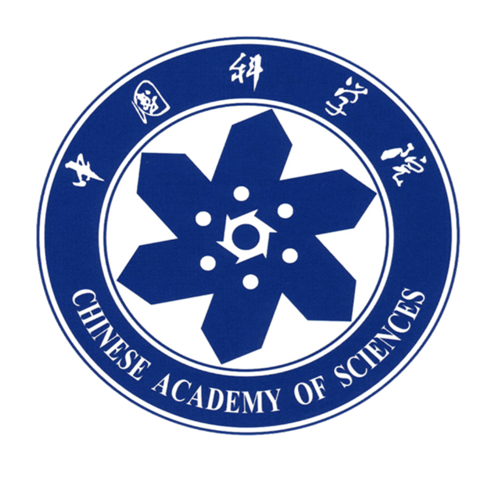

Muqiao Yang
(How to pronouce?)Ph.D. student
Carnegie Mellon University
Department of Electrical and Computer Engineering
{kind=link}
+1 (412) 708-5576
Pittsburgh, PA 15213
Hi! Welcome to Muqiao Yang's homepage. I am a second-year PhD student at Carnegie Mellon University. My research interest is mainly in speech recognition and natural language processing. Before CMU, I obtained my bachelor degree from The Hong Kong Polytechnic University in 2018.
Education
-

Ph.D. in Electrical and Computer Engineering, Carnegie Mellon University up to Present
Advisor: Prof. Ian Lane, Prof. Bhiksha Raj
-
M.S. in Electrical and Computer Engineering, Carnegie Mellon University Dec 2019
-

B.E. in Electronic and Information Engineering, The Hong Kong Polytechnic UniversityMay 2018
Advisor: Prof. Man Wai Mak
-
Minor in Computer Science, The Hong Kong Polytechnic UniversityAug 2015 - May 2018
Experience
-
Graduate Research Assistant, Carnegie Mellon UniversitySept 2020 - present
Advisor: Prof. Ian Lane
-
Research Associate, Carnegie Mellon UniversityDec 2019 - Sept 2020
Advisor: Prof. Ruslan Salakhutdinov
-
Graduate Research Assistant, Carnegie Mellon UniversityNov 2018 - Dec 2019
Advisor: Prof. Ruslan Salakhutdinov, Prof. Louis-Philippe Morency
-

Research Intern, State Key Lab of Computer Arcitechture, Institue of Computing Technology, Chinese
Academy of SciencesMay 2018 - Jul 2018Advisor: Prof. Shimin Chen